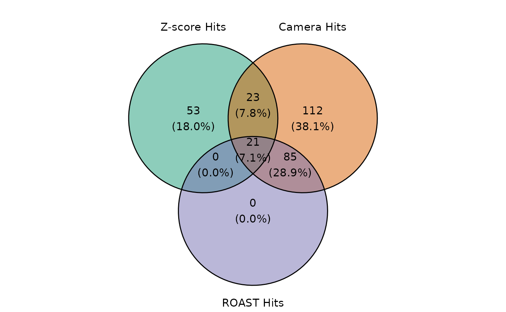

ScreenR Example Analysis
Emanuel Michele Soda
Istituto Europeo Oncologia (IEO), Milano, Italyemanuelmichele@ieo.it
Elena Ceccacci
Istituto Europeo Oncologia (IEO), Milano, Italyelena.ceccacci@ieo.it
2023-09-05
Source:vignettes/Analysis_Example.Rmd
Analysis_Example.RmdImporting Package
knitr::opts_chunk$set(collapse = TRUE, comment = "#>")
library(ggplot2)
library(dplyr)##
## Attaching package: 'dplyr'## The following objects are masked from 'package:stats':
##
## filter, lag## The following objects are masked from 'package:base':
##
## intersect, setdiff, setequal, unionIntroduction
The R package ScreenR has been developed to perform analysis of High-throughput RNA interference screening using pooled shRNA libraries and next generation sequencing.. Nowadays several short hairpin RNA (shRNA) libraries are commercial available, and in the last years the interest in this type of analysis, often called barcode screening, has greatly increased for their benefits both from a time-consuming point of view and for the possibility of carrying out screening on a large number of genes simultaneously. However, the bioinformatic analysis of this type of screening still lacks a golden standard. Here, ScreenR allows the user to carry out a preliminary quality check of the experiment, visually inspect the data and finally identify the most significant hits of the experiment through a series of plots and cross-statistical analyses.
Installation
Bioconductor
ScreenR requires several CRAN and Bioconductor R packages to be installed. Dependencies are usually handled automatically, when installing the package using the following commands:
if (!require("BiocManager", quietly = TRUE))
install.packages("BiocManager")
BiocManager::install("ScreenR")Github
The newest version can directly be installed from GitHub using the CRAN package devtools:
if (!require("devtools", quietly = TRUE))
install.packages("devtools")
devtools::install_github("EmanuelSoda/ScreenR")Analysis
Here is reported the ScreenR pipeline

Read Data
The input of ScreenR is a count table obtained from barcode alignment to the reference genome/library. A count table is usually the starting point of an RNA-seq deferentially expressed genes analysis and consists of a matrix containing reads count organized with:
- Genes on the rows
- Samples on the columns
For this vignette we will use as an example a Loss of Function Chemical lethality Genetic Screening performed using shRNA libraries where each gene is represented by ten slightly different shRNA each labeled with a unique barcode coming from an unpublished dataset generated using the Cellecta protocol.
First of all the data has to be read. Then another very important step is to set up the column names in the following way:
- The first part of the string is the timepoint
- The second is the type of sample (example: treated or control or the name of the treatment)
- Third slot is a way to make each replicate unique (for example a letter or a number)
In the end we have
Time point_Type of sample_replicate
and for example we could have h24_control_1 which mean the first replicate of the control sample at 24 hour.
Since this dataset comes from a Chemical Synthetic Lethality experiments the samples treated with the drug combined with the shRNAs knockdown should present a decreased number of reads compared to the controls.
data(count_table)
data(annotation_table)
data <- count_table
colnames(data) <- c(
"Barcode", "Time1", "Time2", "Time3_TRT_A", "Time3_TRT_B", "Time3_TRT_C",
"Time3_CTRL_A", "Time3_CTRL_B", "Time3_CTRL_C",
"Time4_TRT_A", "Time4_TRT_B", "Time4_TRT_C",
"Time4_CTRL_A", "Time4_CTRL_B", "Time4_CTRL_C"
)
data <- data %>%
dplyr::mutate(Barcode = as.factor(Barcode)) %>%
dplyr::filter(Barcode != "*") %>%
tibble()
total_Annotation <- annotation_tableObject Creation
The second needed step is to create a ScreenR object from the count table. The ScreenR object is created using the function create_screenr_object() and will be used to store the most important information to perform the analysis. Most of the ScreenR function takes as main input the ScreenR object to perform the needed operation and return a result.
groups <- factor(c(
"T1/T2", "T1/T2",
"Time3_TRT", "Time3_TRT", "Time3_TRT",
"Time3_CTRL", "Time3_CTRL", "Time3_CTRL",
"Time4_TRT", "Time4_TRT", "Time4_TRT",
"Time4_CTRL", "Time4_CTRL", "Time4_CTRL"
))
palette <- c("#66c2a5", "#fc8d62", rep("#8da0cb", 3), rep("#e78ac3", 3),
rep("#a6d854", 3), rep("#ffd92f", 3))
object <- create_screenr_object(
table = data, annotation = total_Annotation, groups = groups,
replicates = ""
)Removing all zero rows
object <- remove_all_zero_row(object)Computing the needed tables
Once the object is created, the data must be normalized to start the analysis. ScreenR uses Counts Per Million (CPM) normalization which has the following mathematical expression:
\[CPM = \frac{Number \; of \; mapped \; reads \; to \; a \; barcode} { \sum_{sample}{Number\; of \;mapped \; reads}} *10^{6}\]
The number of reads mapped for each barcode in a sample are normalized by the number of reads in that sample and multiplied by one million.
This information is store in a data table which is a tidy version of the original count table and will be used throughout the analysis.
object <- normalize_data(object)
object <- compute_data_table(object)Quality Check
The first step to perform when dealing with sequencing data is to check the quality of the samples. In ScreenR this can be done using several methods.
Mapped Reads
The total number of mapped reads can be displayed with a barplot with the formula.
plot <- plot_mapped_reads(object, palette) +
ggplot2::coord_flip() +
ggplot2::scale_y_continuous(labels = scales::comma) +
ggplot2::theme(legend.position = "none") +
ggplot2::ggtitle("Number of Mapped Reads in each sample")
plotFor example the distribution can be seen using both boxplots or density plots.
#### Boxplot Mapped Reads
plot <- plot_mapped_reads_distribution(
object, palette,
alpha = 0.8,
type = "boxplot"
) +
coord_flip() +
theme(legend.position = "none")
plotDensity plot
plot <- plot_mapped_reads_distribution(
object, palette,
alpha = 0.5,
type = "density"
) +
ggplot2::theme(legend.position = "none")
plot
Barcode Lost
Another very important quality check when a Genetic Screening is performed is to check the barcode lost during the experiment, meaning the barcode that after different time points or treatments results in reads count equal to zero. ScreenR implements a function able to compute and plot the number of barcodes lost for each samples.
plot <- plot_barcode_lost(screenR_Object = object, palette = palette) +
ggplot2::coord_flip()
plotMoreover it is important to check if the lost barcodes in a sample all belong to the same gene, in order to verify that an adequate number of barcodes per gene are still present. This can be done by visualizing the number of barcode lost in a sample by gene.
plot <- plot_barcode_lost_for_gene(object,
samples = c("Time4_TRT_C", "Time4_CTRL_C")
)
plotPlot MDS
In order to see the samples clusterization an initial MDS analysis can be conducted. In ScreenR this can be done using the plot_mds function and the user can decide the color code of the graph in order to highlight the trend of the samples based on replicates, treatment or timepoints simply by modifying the field levels in the plot_mds function.
For Sample
plot_mds(screenR_Object = object)For Treatment
group_table <- get_data_table(object) %>%
select(Sample, Day, Treatment) %>%
distinct()
#> ScreenR normalized data table containing:
#> 74438 rows
#> 9 columns
group_treatment <- group_table$Treatment
plot_mds(
screenR_Object = object,
groups = factor(x = group_treatment, levels = unique(group_treatment))
)
Statistical Analysis
Once the various steps of the quality check have been passed, the actual statistical analysis can begin. The statistical Analysis of ScreenR is based on three different methods:
Z-score hit
In order to compute the Z-score, first a list of metrics has to be computed. In particular a Log2FC is computed for the treated vs control samples in the different conditions. This can be done using the function compute_metrics(). Here is reported an example of treated vs control in different day.
Then the different distribution of the Z-score can be plotted using the plot_zscore_distribution function.
# 2DG
data_with_measure_TRT <- list(
Time3 = compute_metrics(
object,
control = "CTRL", treatment = "TRT",
day = "Time3"
),
Time4 = compute_metrics(
object,
control = "CTRL", treatment = "TRT",
day = "Time4"
)
)
plot_zscore_distribution(data_with_measure_TRT, alpha = 0.8) Z-score hit
Based on these metrics the Z-score hit identification can be computed using the find_zscore_hit function.
zscore_hit_TRT <- list(
Time3 = find_zscore_hit(
table_treate_vs_control = data_with_measure_TRT$Time3,
number_barcode = 6, metric = "median"
),
Time4 = find_zscore_hit(
table_treate_vs_control = data_with_measure_TRT$Time4,
number_barcode = 6, metric = "median"
)
)
zscore_hit_TRT
#> $Time3
#> # A tibble: 83 × 2
#> Gene numberOfBarcode
#> <chr> <int>
#> 1 Gene_1 7
#> 2 Gene_11 7
#> 3 Gene_116 8
#> 4 Gene_120 8
#> 5 Gene_121 7
#> 6 Gene_128 8
#> 7 Gene_15 7
#> 8 Gene_156 8
#> 9 Gene_158 7
#> 10 Gene_160 7
#> # ℹ 73 more rows
#>
#> $Time4
#> # A tibble: 97 × 2
#> Gene numberOfBarcode
#> <chr> <int>
#> 1 Gene_107 7
#> 2 Gene_121 8
#> 3 Gene_125 7
#> 4 Gene_126 7
#> 5 Gene_134 7
#> 6 Gene_138 7
#> 7 Gene_139 7
#> 8 Gene_14 7
#> 9 Gene_147 8
#> 10 Gene_148 9
#> # ℹ 87 more rowsCAMERA
The same can be done with the CAMERA hit using the function find_camera_hit.
matrix_model <- model.matrix(~ groups)
colnames(matrix_model) <- unique(groups)
camera_hit_TRT <- list(
Time3 = find_camera_hit(
screenR_Object = object, matrix_model = matrix_model,
contrast = "Time3_TRT",
),
Time4 = find_camera_hit(
screenR_Object = object, matrix_model = matrix_model,
contrast = "Time4_TRT"
)
)
camera_hit_TRT
#> $Time3
#> # A tibble: 258 × 5
#> Gene NGenes Direction PValue FDR
#> <chr> <dbl> <fct> <dbl> <dbl>
#> 1 Gene_372 12 Down 3.80e-15 1.93e-12
#> 2 Gene_364 12 Down 7.23e-15 1.93e-12
#> 3 Gene_374 10 Down 3.55e- 7 6.32e- 5
#> 4 Gene_282 10 Down 2.24e- 4 2.40e- 2
#> 5 Gene_75 10 Down 7.59e- 4 6.76e- 2
#> 6 Gene_323 10 Down 1.45e- 3 1.11e- 1
#> 7 Gene_179 10 Down 1.68e- 3 1.12e- 1
#> 8 Gene_117 10 Down 1.10e- 2 4.23e- 1
#> 9 Gene_228 10 Down 1.49e- 2 4.97e- 1
#> 10 Gene_211 10 Down 1.84e- 2 5.77e- 1
#> # ℹ 248 more rows
#>
#> $Time4
#> # A tibble: 241 × 5
#> Gene NGenes Direction PValue FDR
#> <chr> <dbl> <fct> <dbl> <dbl>
#> 1 Gene_364 12 Down 1.13e-24 6.03e-22
#> 2 Gene_372 12 Down 3.46e-21 9.24e-19
#> 3 Gene_374 10 Down 9.55e- 8 1.70e- 5
#> 4 Gene_323 10 Down 7.27e- 7 9.70e- 5
#> 5 Gene_282 10 Down 6.22e- 6 6.64e- 4
#> 6 Gene_75 10 Down 1.76e- 5 1.57e- 3
#> 7 Gene_296 10 Down 1.31e- 4 1.00e- 2
#> 8 Gene_80 10 Down 5.72e- 4 3.82e- 2
#> 9 Gene_54 10 Down 7.94e- 3 3.26e- 1
#> 10 Gene_179 10 Down 1.13e- 2 3.94e- 1
#> # ℹ 231 more rowsROAST
Last but not least this is done also for the ROAST hit using the
function
find_roast_hit.
roast_hit_TRT <- list(
Time3 = find_roast_hit(
screenR_Object = object, matrix_model = matrix_model,
contrast = "Time3_TRT",
),
Time4 = find_roast_hit(
screenR_Object = object, matrix_model = matrix_model,
contrast = "Time4_TRT"
)
)
roast_hit_TRT
#> $Time3
#> # A tibble: 30 × 9
#> Gene NGenes PropDown PropUp Direction PValue FDR PValue.Mixed FDR.Mixed
#> <chr> <int> <dbl> <dbl> <fct> <dbl> <dbl> <dbl> <dbl>
#> 1 Gene_3… 12 0.917 0 Down 0.0001 0.0134 0.0001 0.0134
#> 2 Gene_3… 12 0.833 0 Down 0.0001 0.0134 0.0001 0.0134
#> 3 Gene_3… 10 0.7 0 Down 0.0002 0.0200 0.0008 0.0834
#> 4 Gene_88 10 0.5 0.1 Down 0.0003 0.0267 0.0025 0.145
#> 5 Gene_1… 10 0.3 0 Down 0.0006 0.0489 0.0167 0.222
#> 6 Gene_75 10 0.4 0 Down 0.0008 0.0501 0.0211 0.244
#> 7 Gene_2… 10 0.5 0 Down 0.0012 0.0682 0.0263 0.264
#> 8 Gene_2… 10 0.2 0 Down 0.0046 0.162 0.0752 0.410
#> 9 Gene_4… 10 0.4 0.1 Down 0.0066 0.206 0.0108 0.162
#> 10 Gene_3… 10 0.2 0 Down 0.0085 0.222 0.0193 0.232
#> # ℹ 20 more rows
#>
#> $Time4
#> # A tibble: 105 × 9
#> Gene NGenes PropDown PropUp Direction PValue FDR PValue.Mixed FDR.Mixed
#> <chr> <int> <dbl> <dbl> <fct> <dbl> <dbl> <dbl> <dbl>
#> 1 Gene_… 12 1 0 Down 0.0001 0.00205 0.0001 0.000785
#> 2 Gene_… 12 1 0 Down 0.0001 0.00205 0.0001 0.000785
#> 3 Gene_… 10 0.9 0 Down 0.0001 0.00205 0.0001 0.000785
#> 4 Gene_… 10 0.9 0 Down 0.0001 0.00205 0.0001 0.000785
#> 5 Gene_… 10 0.7 0 Down 0.0001 0.00205 0.0001 0.000785
#> 6 Gene_… 10 0.7 0.1 Down 0.0001 0.00205 0.0001 0.000785
#> 7 Gene_… 10 0.7 0 Down 0.0001 0.00205 0.0001 0.000785
#> 8 Gene_… 10 0.6 0 Down 0.0001 0.00205 0.0002 0.00157
#> 9 Gene_… 10 0.4 0.1 Down 0.0001 0.00205 0.0005 0.00293
#> 10 Gene_… 10 0.4 0 Down 0.0001 0.00205 0.0135 0.0274
#> # ℹ 95 more rowsFind Common Hit
ScreenR considers as final hit only the one result as candidate hit in all three statistical methods. However this is a particularly stringent method and in some cases leads to a small number of results. For this reason the user can also decide to opt for a less stringent method that considers only the hits present in at least two of the statistical methods. The two different strategies can be computed with the function::
common_hit_TRT_at_least_2: considering candidate Hits the one present in at least two of the three methods (less stringent)
common_hit_TRT_at_least_3: considering candidate Hits the one present in all of the three methods
common_hit_TRT_at_least_2 <- list(
Time3 = find_common_hit(
zscore_hit_TRT$Time3, camera_hit_TRT$Time3, roast_hit_TRT$Day3,
common_in = 2
),
Time4 = find_common_hit(
zscore_hit_TRT$Time4, camera_hit_TRT$Time4, roast_hit_TRT$Day6,
common_in = 2
)
)
common_hit_TRT_at_least_3 <- list(
Time3 = find_common_hit(
zscore_hit_TRT$Time3, camera_hit_TRT$Time3, roast_hit_TRT$Time3,
common_in = 3
),
Time4 = find_common_hit(
zscore_hit_TRT$Time4, camera_hit_TRT$Time4, roast_hit_TRT$Time4,
common_in = 3
)
)Plot common hit
The intersection of the hits found by the three statistical methods can be easily visualized using the plot_common_hit function.
plot_common_hit(
hit_zscore = zscore_hit_TRT$Time4, hit_camera = camera_hit_TRT$Time4,
roast_hit_TRT$Time4, show_elements = FALSE, show_percentage = TRUE
)
As we all know, when we deal with statistical methods the is the possibility of type I error also known as “false positive”. For this reason is important to visualize the results obtained. This can be done by visualizing the trend of the candidate hits obtained using the function plot_trend.
candidate_hits <- common_hit_TRT_at_least_2$Time3
plot_trend(screenR_Object = object,
genes = candidate_hits[1],
nrow = 2, ncol = 2,
group_var = c("Time1", "Time2", "TRT"))
plot_trend(screenR_Object = object,
genes = candidate_hits[2],
nrow = 2, ncol = 2,
group_var = c("Time1", "Time2", "TRT"))
sessionInfo()
#> R version 4.3.1 (2023-06-16)
#> Platform: x86_64-pc-linux-gnu (64-bit)
#> Running under: Ubuntu 22.04.3 LTS
#>
#> Matrix products: default
#> BLAS: /usr/lib/x86_64-linux-gnu/openblas-pthread/libblas.so.3
#> LAPACK: /usr/lib/x86_64-linux-gnu/openblas-pthread/libopenblasp-r0.3.20.so; LAPACK version 3.10.0
#>
#> locale:
#> [1] LC_CTYPE=C.UTF-8 LC_NUMERIC=C LC_TIME=C.UTF-8
#> [4] LC_COLLATE=C.UTF-8 LC_MONETARY=C.UTF-8 LC_MESSAGES=C.UTF-8
#> [7] LC_PAPER=C.UTF-8 LC_NAME=C LC_ADDRESS=C
#> [10] LC_TELEPHONE=C LC_MEASUREMENT=C.UTF-8 LC_IDENTIFICATION=C
#>
#> time zone: UTC
#> tzcode source: system (glibc)
#>
#> attached base packages:
#> [1] stats graphics grDevices utils datasets methods base
#>
#> other attached packages:
#> [1] ScreenR_0.99.54 tidyr_1.3.0 dplyr_1.1.3 ggplot2_3.4.3
#> [5] BiocStyle_2.28.0
#>
#> loaded via a namespace (and not attached):
#> [1] sass_0.4.7 utf8_1.2.3 generics_0.1.3
#> [4] stringi_1.7.12 lattice_0.21-8 digest_0.6.33
#> [7] magrittr_2.0.3 evaluate_0.21 grid_4.3.1
#> [10] bookdown_0.35 fastmap_1.1.1 Matrix_1.5-4.1
#> [13] rprojroot_2.0.3 jsonlite_1.8.7 limma_3.56.2
#> [16] BiocManager_1.30.22 mgcv_1.8-42 purrr_1.0.2
#> [19] fansi_1.0.4 scales_1.2.1 textshaping_0.3.6
#> [22] jquerylib_0.1.4 cli_3.6.1 rlang_1.1.1
#> [25] splines_4.3.1 munsell_0.5.0 withr_2.5.0
#> [28] cachem_1.0.8 yaml_2.3.7 tools_4.3.1
#> [31] memoise_2.0.1 colorspace_2.1-0 locfit_1.5-9.8
#> [34] ggvenn_0.1.10 vctrs_0.6.3 R6_2.5.1
#> [37] lifecycle_1.0.3 stringr_1.5.0 edgeR_3.42.4
#> [40] fs_1.6.3 ragg_1.2.5 pkgconfig_2.0.3
#> [43] desc_1.4.2 pkgdown_2.0.7 pillar_1.9.0
#> [46] bslib_0.5.1 gtable_0.3.4 glue_1.6.2
#> [49] Rcpp_1.0.11 systemfonts_1.0.4 highr_0.10
#> [52] xfun_0.40 tibble_3.2.1 tidyselect_1.2.0
#> [55] knitr_1.43 farver_2.1.1 nlme_3.1-162
#> [58] patchwork_1.1.3 htmltools_0.5.6 labeling_0.4.3
#> [61] rmarkdown_2.24 compiler_4.3.1